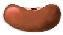

![[SGF FF[4] - Smart Game Format]](images/head.gif)
|
|
This is the official specification of the SGF FF[4] standard.
SGF is the abbreviation of 'Smart Game Format'. The file format is
designed to store game records of board games for two players.
It's a text only, tree based format. Therefore games stored in this
format can easily be emailed, posted or processed with text-based tools.
The main purposes of SGF are to store records of played games and to
provide features for storing annotated and analyzed games (e.g. board
markup, variations).
Last updated: 2001-08-12
See history for changes.
| For users | |
|---|---|
| Users guide | An user orientated introduction to SGF files |
| Japanese version | Japanese version of the spec by Teruo Namatame. |
| Tools and examples | |
| SGFC | SGF Syntax Checker & Converter
Web interface to SGFC |
| Example file | An example SGF file plus pictures to show the basic and sophisticated features of SGF |
| For developers | SGF Specification |
| Basics |
|
| Properties |
|
| Archives | Tar-archive (gzip) of all HTML files (excluding discussion, FF4 example, FF[1], FF[3] and SGF syntax checker) |
| Future |
|
| Specification Supplements | |
| Changes to FF[3] | To get a quick overview of what's new in FF[4] have a look at the changes from FF[3]. |
| Compatibility | Compatibility issues |
| Converting | Converting old files to FF[4] |
| Index of properties | Index of all FF[1]-FF[4] properties (alphabetical) |
| Old specifications | |
| FF[1] | Specification of FF[1] by Anders Kierulf |
| FF[3] | Specification of FF[3] by Martin Müller |
| Style guide | Style guide by Martin Müller (old but still valid) |
| Archive | Tar archive (gzip) of old specifications |
| Email list | |
| Email list | A short description and how to subscribe |
| Archive | Archive of the email list |
Note: Many Go (WeiQi) terms are used throughout the specification, e.g. point is used instead of field or square.
Note: Please pay attention to the difference of mandatory (has to be, must not, ...) and recommended (suggested, should have, shouldn't ...). Mandatory topics HAVE TO be done exactly this way, otherwise it's illegal. Recommended topics should but don't have to be followed. If the application doesn't obey those suggestions then the 'only' consequence is bad style.
|
Arno Hollosi ahollosi@xmp.net | Hosted at
 Red Bean
Virtual solutions for virtual people |